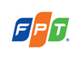

Đây là ví dụ minh họa cho buổi học
FPT, tên viết bằng tiếng Anh của Công ty cổ phần(tên cũ của công ty là Công ty cổ phần phát triển đầu tư công nghệ FPT), là một tập đoàn kinh tế tại Việt Nam với lĩnh vực kinh doanh chính là cung cấp các dịch vụ liên quan công nghệ thông tin [4][5][6]. Theo thống kê của chương trình Phát triển Liên Hợp Quốc, đây là doanh nghiệp lớn thứ 14 của Việt Nam vào năm 2007.[7]
Facebook là một website mạng xã hội truy cập miễn phí do công ty Facebook, Inc điều hành và sở hữu tư nhân[1]. Người dùng có thể tham gia các mạng lưới được tổ chức theo thành phố, nơi làm việc, trường học và khu vực để liên kết và giao tiếp với người khác. Mọi người có thể kết bạn và gửi tin nhắn cho họ, và cập nhật trang hồ sơ cá nhân của mình để thông báo cho bạn bè về chúng.
Yahoo! Inc là một tập đoàn đại chúng Hoa Kỳ với mục tiêu trở thành "dịch cụ Internet toàn cầu hàng đầu cho người tiêu thụ và giới doanh nghiệp". Trang chính của nó đặt tại: http//www.yahoo.com, phiên bản tiếng việt tại http://vn.yahoo.com, một thư mục mạng lưới và một số dịch vụ khác, trong đó có Yahoo! Mail, Yahoo! Search và Yahoo! Search và Yahoo! News.
Yahoo! Inc là một tập đoàn đại chúng Hoa Kỳ với mục tiêu trở thành "dịch cụ Internet toàn cầu hàng đầu cho người tiêu thụ và giới doanh nghiệp". Trang chính của nó đặt tại: http//www.yahoo.com, phiên bản tiếng việt tại http://vn.yahoo.com, một thư mục mạng lưới và một số dịch vụ khác, trong đó có Yahoo! Mail, Yahoo! Search và Yahoo! Search và Yahoo! News.